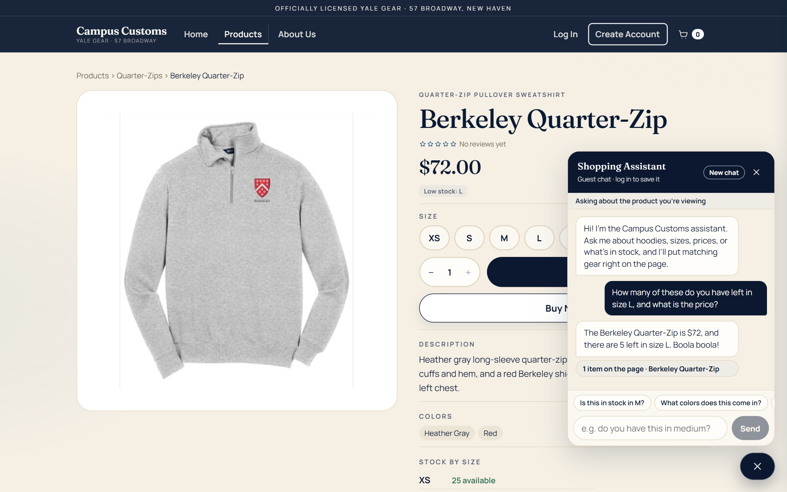
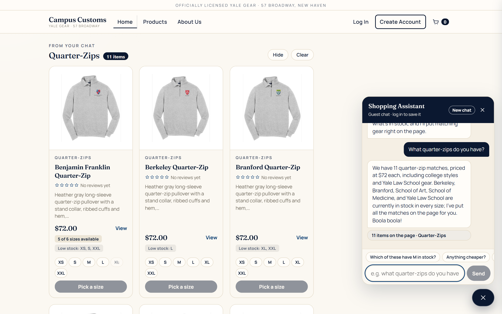
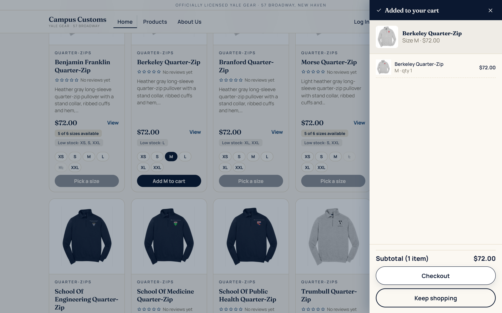
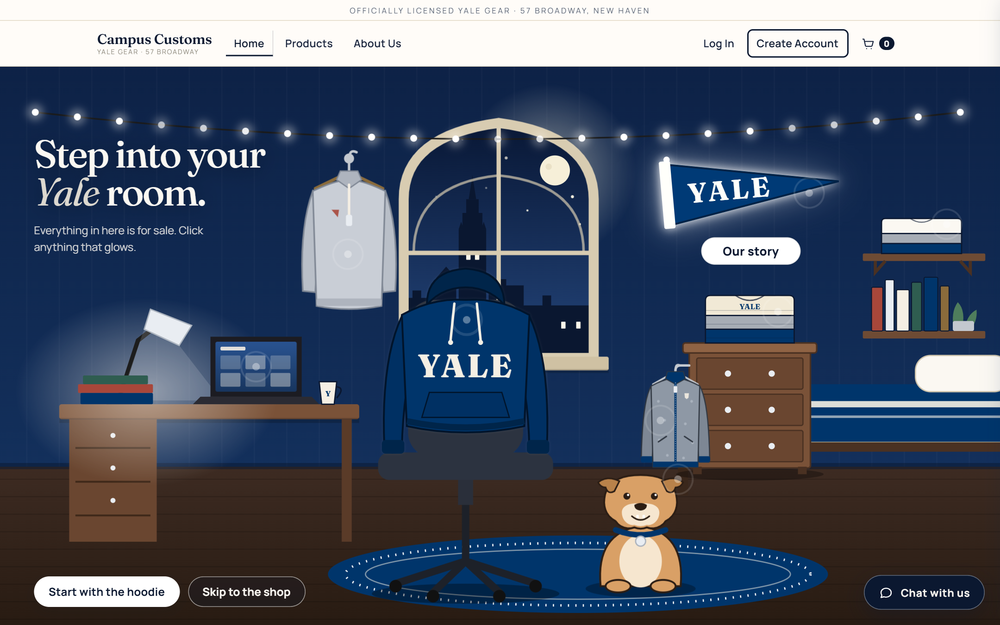

Campus Customs: App Check
Problem 11. Tested on the live site (React frontend + FastAPI/Pydantic AI backend) in Microsoft Edge at 1440×900, as a guest shopper.
| # | Check | Result |
|---|---|---|
| 1 | Chat answers an inventory question with the correct stock and price from the database | Pass |
| 2 | A category question ("quarter-zips") makes matching product cards appear on the page | Pass |
| 3 | Usability feature from Problem 9: add to cart from a card, then the mini-cart drawer | Pass |
| 4 | Problem 10 design: the interactive 2.5D dorm-room home page | Pass |
1. Chat checks an item's inventory level

On the Berkeley Quarter-Zip page, the shopper asks "How many of these do you have left in size L, and what is the price?" and the assistant replies "$72, and there are 5 left in size L." That matches the database exactly. The bot also understood "these" from the page the shopper is on.
Database check (campus_customs.db): price = $72.00; inventory L = 5 (XS 25, S 8, M 25, L 5, XL 8, XXL 12).
2. Search results cards appear after a category question

Asking "What quarter-zips do you have?" makes the page show a "Quarter-Zips · 11 items" shelf of product cards (image, name, price, short description, stock badges). The cards come from the agent's structured results and are built from the database. Each card links to its product page.
Database check: the Quarter-Zips category has 11 products, all $72. The shelf showed all 11.
3. Usability feature (Problem 9): add to cart from a card + mini-cart drawer

Straight from a results card, the shopper picks size M and clicks "Add M to cart". A drawer slides in confirming "Berkeley Quarter-Zip, Size M, $72.00" with the subtotal and a Checkout button. They added an item in two clicks without leaving the page; sold-out sizes (crossed out) can't be picked.
4. The 2.5D dorm-room home page (Problem 10)

The home page is an illustrated Yale dorm room I built in layered SVG: a hoodie on the chair, crewnecks and a fleece jacket on the dresser, tees on the shelf, a quarter-zip on the hook, the laptop, the pennant, and the bulldog. Each of these is a clickable doorway into the shop. Here the mouse is over the pennant, so it shows its soft white glow and an "Our story" label. Clicking any object zooms the camera into it and opens that section.
Measured on the live page: 8 clickable objects and 4 depth layers. As the mouse moves, the layers shift by increasing amounts (back to front: 2.1, 3.5, 5.3, 7.0 px), which is what makes the flat drawing feel 3D.